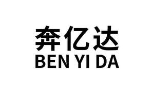

Trade Mark Journal No.2025/051 19 December 2025
UK00004309405 12 December 2025 (16,17,26,35)

- Class 16
- Adhesive paper; Adhesive plastic film for wrapping; Adhesive printed labels; Adhesive tape dispensers for household or stationery use; Adhesives for stationery; Adhesives for stationery or household purposes; Adhesives [glues] for stationery or household purposes; Bags made of plastics for packaging; Clips for paper [stationery]; Double sided adhesive tapes for household use; Double sided adhesive tapes for stationery use; Foils of plastic for packaging; General purpose plastic bags; Paper carton sealing tape; Self-adhesive tapes for stationery or household purposes; Self-adhesive tapes for stationery use; Sticky tape; Automatic adhesive tape dispensers for office use; Kraft paper; Sealing compounds for stationery purposes.
- Class 17
- Adhesive anti-slip tape for flooring applications; Adhesive bands for sealing cartons for industrial or commercial use; Adhesive packaging tapes, other than stationery and not for medical or household purposes; Adhesive strips for use in industry; Adhesive tapes for use with floor coverings; Adhesive tapes [other than for household, medical or stationery use]; Adhesive tapes other than for stationery and not for medical or household purposes; Electrical tape; Insulating tape; Electrical insulating tape; Packaging tapes (Adhesive -), other than for household or stationery use; Paper adhesive tape, other than for household, medical or stationery purposes; Rubber tape for insulating; Self-adhesive packaging tapes, other than stationery and not for medical or household purposes; Self-adhesive tapes for packings; Self-adhesive tapes, other than stationery and not for medical or household purposes; Self-adhesive tapes [other than for stationery, household or medical purposes]; Tapes (Adhesive -), other than stationery and not for medical or household purposes; Duct tapes; Rubber stoppers for industrial packaging containers.
- Class 26
- Bags [Zip fasteners for -]; Bands (Expanding -) for holding sleeves; Braces (Fastenings for -); Buckles [clothing accessories]; Clasp (Belt -); Dress fastenings; Buckles for clothing; Epaulettes; Eyelets of metal for clothing; Indoor artificial foliage; Reinforcing tapes for clothing; Suspender holders [fasteners]; Tapes for curtain headings; Tapes for repairing textile articles; Tapes for use in making hems; Appliqués [haberdashery]; Clothing buckles; Hook and loop fasteners; Ribbons of textile materials; Rug hooks.
- Class 35
- Advertising and marketing services provided by means of social media; Advertising and marketing consultancy; Advertising and promotion services and related consulting; Advertising and promotional services; Advertising particularly services for the promotion of goods; Advertising, promotional and marketing services; Advertising services provided over the internet; Advisory services relating to advertising; Business advertising services relating to franchising; Business consultancy to individuals; Chamber of commerce services for the promotion of businesses; Consultancy relating to advertising and promotion services; Consultancy relating to business management; Copywriting for advertising and promotional purposes; Direct mail advertising to attract new customers and to maintain the existing customer base; Dissemination of advertising via online communications networks; Dissemination of advertising for others; Dissemination of advertising for others via an on-line communications network on the internet; Intermediary services relating to advertising; Online advertising on a computer network.
Shenzhen Benyida Technology Co., Ltd.
Representative: Wincomply Service UK Limited